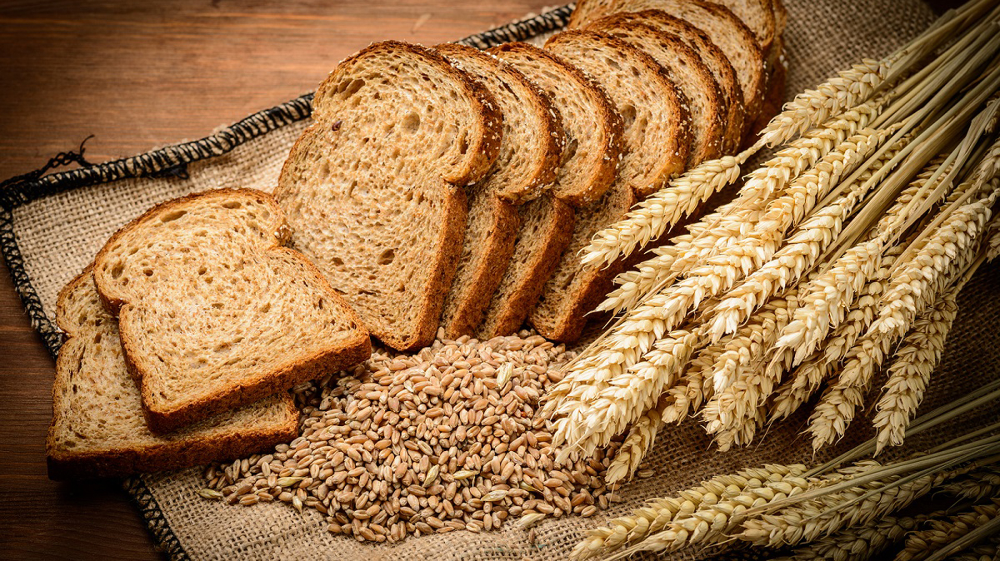
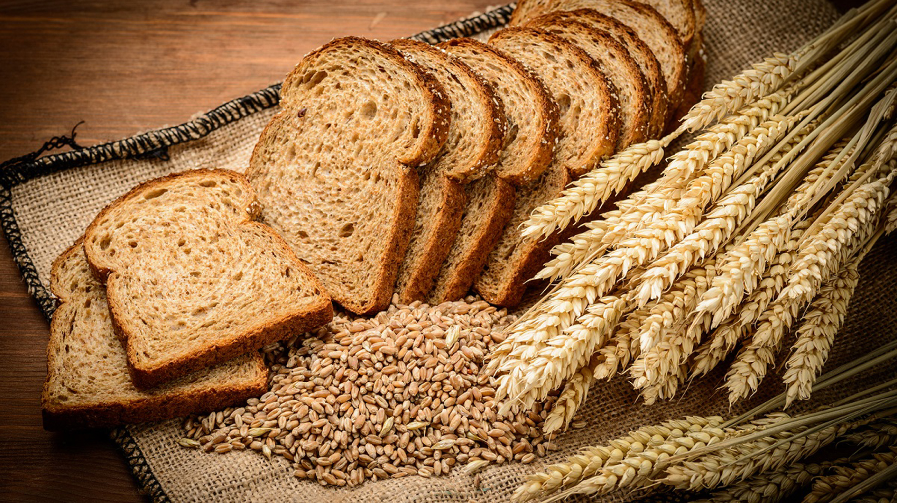
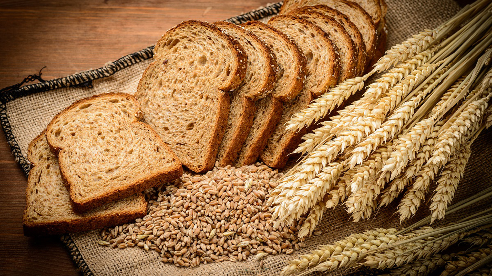
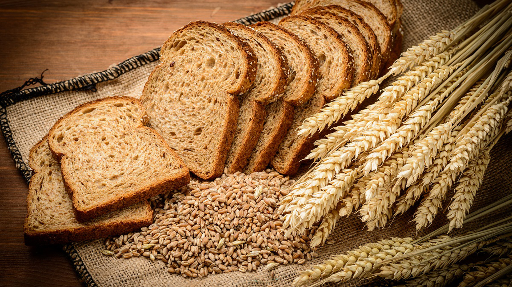

ELABORANT MÉS DE 50 ANYS EL VOSTRE, EL PA DE CASA, EL DEL BARRI!
VINE A LA NOSTRE FORN I COMPRA'L
| Panadería | Ventas Mensuales (en dólares) | Cantidad de Clientes Atendidos por Día |
|---|---|---|
| Mi Panadería | 3000 | 50 |
| Panadería A | 5000 | 80 |
| Panadería B | 4000 | 60 |
| Panadería C | 6000 | 70 |
Como panadería, nos enorgullecemos de ofrecer una amplia variedad de panes frescos y deliciosos. Desde panes tradicionales hasta opciones artesanales, todos hechos con ingredientes de la mejor calidad para satisfacer todos los gustos y necesidades. ¡Ven y descubre nuestras especialidades!
En nuestra panadería, ofrecemos una deliciosa selección de productos, incluyendo croissants, bocadillos, donuts y más. Todos elaborados con ingredientes frescos y de alta calidad para satisfacer tus antojos y necesidades diarias.
https://freshis.com/products/barra-integral-centeno
https://freshis.com/products/barra-integral-centeno
https://freshis.com/products/barra-integral-centeno
Correu: organitzador1@correu.com
Telèfon: 123456789
Correu: organitzador2@correu.com
Telèfon: 987654321
More than 100 years passionate about artisanal bread, pastry and good food
Més de 100 anys apassionats de l'aroma del cafè, els aliments saludables, els més petits detalls i especialment de les persones. Amb un enfocament centrado en la qualitat i la satisfacció dels nostres clients, continuem compromesos a oferir experiències culinàries que perdurin en el temps. La nostra dedicació a la frescor dels ingredients i a la creativitat en la preparació dels nostres plats és el que ens distingeix.